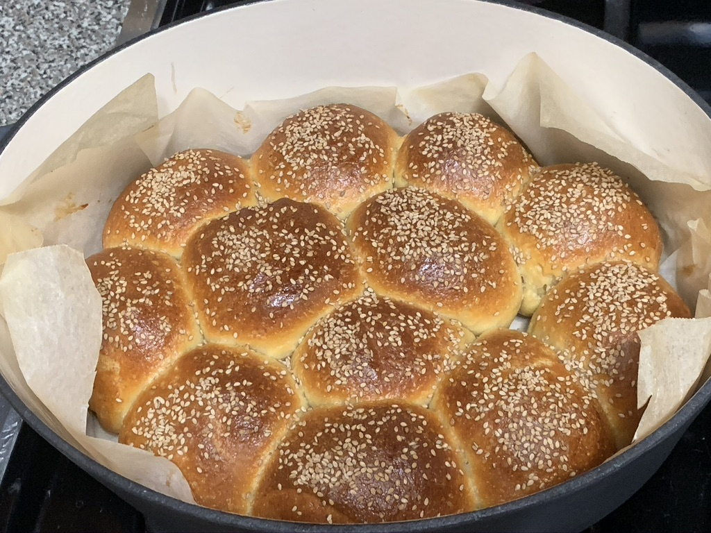

About Me
Hi! My name is Engred. I am a student at Brooklyn College, and I am currently taking CISC
3130. Now, a little more about me - I enjoy horror movies, cooking, baking, making soap,
listening to music, spending time with my family & dog, and I am an all-time animal lover.
I most definitely feel at best in nature, there's just something about the great outdoors that
I LOVE! Favorite foods include seafood, sushi, pasta, and acai bowls. I must confess that I do
get bored easily and so I’m constantly finding things to do. Well, that's about it folks. Thank
you for taking the time of getting to know me a little more. 👋
10 things I would like to accomplish before I die:
- Buy a big house with lots of land to share with family
- Meet and work with great people in the AI sector
- Be fluent with as much programming languages as I can
- Create an app or game
- Fully unleash my creative potential
- Help as much people as I can
- Travel the world
- See the Northern Lights
- Go on a helicopter ride
- Be fluent in other languages
The following are pics of both the soaps and bread I have made, as well as
some pics of my dog ❤️ and myself.
5 / 9

Yoga soap loaf
7 / 9

Sesame sourdough bread
8 / 9
Sourdough batards and pullman
9 / 9

Dana says bye!